Bond of Flame
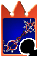
Características:
The Keychain, teeth, and blade resembles Axel's Eternal Flames chakrams. When it is swung, tiny chakrams and flames appear. The two chakrams that make up the Keyblade are joined by a metal numeral 8 and they also have eight total spikes, a reference to Axel's position within the Organization. The Keyblade's name references the friendship between Roxas and Axel, and later the debt Axel owed to Sora.
Crabclaw
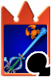
Características:
The Crabclaw's handle is green and resembles seaweed, while its guard is light blue with a purple mermaid adorning both sides. The shaft of the blade is light blue, thin, and resembles a jet of water. The teeth are comprised of a simple, orange crab with its claws pointing outward. The Keychain token is a light blue seashell. The Crabclaw's name is a clear reference to the crab that make up the weapon's teeth. The Japanese name, "Treasure of Sea", reflects the fact that it is awarded to Sora after sealing Atlantica’s Keyhole.
Fairy Harp
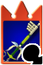
Características:
The Fairy Harp's overall color scheme is reminiscent of Peter Pan's clothing. Its handle is dark green and the base of its guard is light green. The rest of the guard is comprised by two sets of wings, one white pair that create the sides of the guard, and one light blue pair above them. These wings are similar to Tinker Bell's. The base of the blade is dark green and the shaft is light green and rounded. The tips of the blade and the teeth are gold and modeled after Peter Pan's pan pipes. The Keychain has silver links and the token is the red feather in Peter Pan's hat.
Follow the Wind
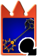
Características:
The teeth of the Keyblade are shaped like a ship's anchor. The guard resembles the ship's helm. There is one of the cursed Aztec Medallions on the Keyblade's hilt and another as the Keychain token. The Keyblade produces Medallion emblems when it hits an object. The variety seen at the Keyblade Graveyard has a darker, greyscale color scheme and a thinner anchor at the teeth. It also lacks a Keychain.
Hidden Dragon
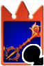
Características:
The Hidden Dragon Keyblade is designed with an oriental dragon theme. The guard is similar to the color and shape of Mushu. Its blade is a burst of fire coming out of a dragon's mouth, while the Keychain's token is the medal Mulan receives for saving the Emperor. The name for this Keyblade is most likely based on the title of the film Crouching Tiger, Hidden Dragon, which is also set in ancient China.
Kingdom Key
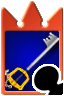
Características:
The Kingdom Key is depicted as a classic skeleton key approximately 3.5' long, with a long silver Keychain extending from the hilt, and a Hidden Mickey token on the end of the Keychain. In Kingdom Hearts, the token is formed from three spheres, while in other games the token is flat and seemingly cut from sheet metal. The blade and teeth of the Keyblade are silver, the rainguard is blue, and the guard is bright gold. The teeth of the Keyblade form the outline of a crown which matches the crown charm Sora wears.
Lady Luck
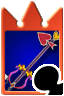
Características:
In Kingdom Hearts, Lady Luck's general appearance is based on the four suits of playing cards, hearts, clubs, spades and diamonds. The blade and handle of the Keyblade are made up of a single, purple shaft with a pink highlight. The "crossguard" is made of two clubs facing each other, with a yellow and orange-brown checkered pattern, and the pommel is a diamond with a slightly darker version of the same pattern. The rest of the guard is a purple and red horseshoe shape with curled ends. The blade is tipped with a large, orange heart with a thin, red and yellow border. The teeth of the Keyblade are comprised of a large, red spade with an angled base. The Keychain is silver, and its token is an Ace of Hearts card.
Maverick Flare
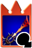
Características:
The handle of the Maverick Flare is a simple grey rod. The blade is yellow orange at its base and slowly darkens to red as it nears the tip. The blade fans out near the tip, which is flat at the top and slanted. The teeth of the Keyblade are comprised of several spikes shaped like those of the Nobody sigil, all of which slant upward slightly. The guard is black and does not connect to the base of the blade, similar the guard on the Rainfell Keyblade, and it sports two black spikes on either side. The Keychain token is a red-orange color.
Midnight Roar
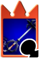
Características:
The Midnight Roar has an orange handle and a black, circular guard with rough edges. The shaft is a smooth, white rod that ends in a black spike. The Keyblade’s teeth form a black, sideways fleur-de-lis. The Keychain token is a black arrowhead with a diamond-shaped gap in its center.
Monochrome
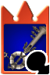
Características:
The Monochrome's guard is a lifesaver float while the blade is a steamboat stack. The Keychain is a ship's wheel, possibly that of the Steamboat Willie. The teeth also resemble the steam whistles from Steamboat Willie. Other than that, the Monochrome resembles the transmitter of the Graham Bell phone. "Monochrome" refers to images executed in shades of a single color, and is often used to describe things that are in black and white, like the world of Timeless River.
Oathkeeper
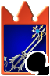
Características:
The Oathkeeper's shaft displays two hearts, and its handle bears two angel wings, contrasting the bat wings that comprise Oblivion's handle. The teeth are fashioned in the shape of the Kanji for "light" (光), corresponding to the Oblivion's kanji for "darkness". Its Keychain token is Kairi's Wayfinder, a star sewn together from Thalassa Shells. In Castle Oblivion, it is replaced by Naminé's trinket until the illusion over Sora's Thalassa Charm breaks. When it is summoned by the user, Oathkeeper emerges in a bright, yellowish-white light.
Oblivion
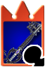
Características:
Oblivion is similar in shape to the Kingdom Key, though is black and has a longer reach. The hilt guard is comprised of two bat-like wings extending downward. The teeth are in the shape of the Kanji for "darkness" (闇). The Keychain's token is a black version of Sora's crown necklace. A chain-like design runs up the length of the blade. The diamond in its hilt also resembles the diamond in the original logo of Hollow Bastion. When the Oblivion is summoned in Kingdom Hearts II, black smoke and violet sparks surround it. The Keyblade's name means a "state of forgetting or having forgotten", and its Japanese name has the same basic meaning. The Oblivion is often associated with the memories that are passing away, such as when Sora reaches the last floors of Castle Oblivion, or when Roxas begins forgetting Xion following her destruction. In Kingdom Hearts Re:coded, the Oblivion's upgrade names are references to the protagonists of the series. "Wind" is associated with Ventus, "Earth" matches up with Riku and Terra, "Sea" corresponds with Aqua and Kairi, and "Sky" references Sora himself.
Olympia
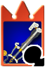
Características:
The blade has grey columns for the handle and sides of its guard. The base of the guard is white, and the top of the guard resembles two white arms flexing their muscles. The shaft of the Keyblade is white with grey edges and "Hercules" engraved into the white section. The teeth are set very high on the Keyblade, and are attached to the tip. They resemble clouds. The Olympia as a whole is meant to resemble Greek architecture, and appears to be carved from marble. The Keychain is made of several silver links, save for the first one, which is gold, and the token is the standard Olympus Stone.
Photon Debugger
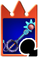
Características:
The Photon Debugger looks similar to the inhabitants of Space Paranoids, appearing to be constructed of computer circuitry. The Keychain's token is Tron's Identity Disk. Its name comes from two words; debugging is a way to eliminate a computer virus or bugs, similar to how the Keyblade eradicates Heartless. Photons are the fundamental quantum particles that compose light, and Sora is the wielder of the Keyblade of Light.
Pumpkinhead
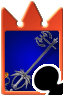
Características:
The Pumpkinhead is almost entirely black in color. It has a simple handle, a facsimile of Jack Skellington's head adorning the hilt, and a jagged guard with thin, white veins that is modeled after Jack's bowtie. The shaft of the blade is thin and long, and the teeth resemble a stylized bat hanging from the blade. The Keychain token is a jack o' lantern. The name "Pumpkinhead" references Jack's position in Halloween Town, the "Pumpkin King". Both Jack's head and a jack o' lantern are part of the Keyblade's design.
Soul Eater
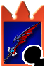
Características:
The Soul Eater is a falchion-esque sword, with a red, purple and blue blade shaped like a demonic wing. Its handle bears the Gazing Eye, and the handle itself consists of dark braids. It has a striking resemblance to Way to the Dawn, as well as Void Gear. The weapon can be summoned at will, appearing in Riku's hand in an amorphous cloud of darkness. In Halloween Town, the Soul Eater gains an aged appearance; the scales on the wing are more apparent, the ivory clips on the handle bear red splatter spots that resemble rust, and the eye of darkness becomes cracked. The weapon's name is derived from an ability attributed to the Dark Knight class in the Final Fantasy series, in which Soul Eater drains the HP of the user to initiate an extra-powerful attack. The attack and the Dark Knight class are associated with darkness, and the Soul Eater ability is sometimes called Darkside, Dark Wave or even Darkness, making it a fitting name for Riku's weapon.
Spellbinder
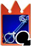
Características:
The Spellbinder Keyblade takes its theme from the imagery of magic and astrology. The handle is dark blue and the guard encircles the handle like a white, squat teardrop where the top of the guard is a white heart. There are two dark blue arches with a hole in the center of each, one on each side of the top of the guard. The shaft consists of two separate blue poles that end at the “teeth” that resembles half of a gear. There’s a dark blue circle, surrounded by a light blue, then another dark blue circle around that which is the inside of the teeth piece; this group of circles is attached to the shaft by another light blue arc. The outer side of the circles is a half circle with a point at the peak and two small spheres within the half circle, one by the peak and one in the center of the arc. The top of the shaft is a dark blue, six-pointed star within a light blue circle. Its Keychain token has a gold carabiner with a rusty chain attached and a green spellbook as the charm.
Star Seeker
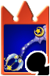
Características:
The guard appears to be two shooting stars. The blade is blue and decorated with stars, while the teeth is a crescent moon and a star. Strangely, in Kingdom Hearts Birth by Sleep, King Mickey holds Star Seeker in reverse, with the opposite side of the Keyblade used as the teeth. The Keychain design is a crescent moon. The Keyblade's name seemingly references Mickey and Sora's journeys to the various worlds, which are seen as stars. It also makes a reference to the worlds in the universe of Kingdom Hearts, since stars refer to the worlds. The Star Seeker is part of a group of weapons associated with the Mysterious Tower, along with the corresponding staff and shield. These weapons are decorated with crescent moons and stars, and are the second set of weapons available to the party.
Three Wishes
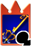
Características:
In Kingdom Hearts, the Three Wishes has a simple, wooden handle with a yellow pommel that resembles the top of a building in Agrabah. The guard is predominantly gold, though its base is sky blue, and is shaped like a curled heart with small "wings". The base of the blade is sky blue, but the rest of the blade is gold, with a point emerging near the base. The teeth are a bronze color, and they arc downward from the tip of the blade in the shape of a stylized number 3. The Keychain is made of several metallic blue links, and the token is Genie's lamp.The Ultima Weapon Keyblade is named after the eponymous sword in the Final Fantasy series.
Total Eclipse
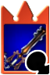
Características:
The ground combo starts with a vertical downward slash and a thrust but can be ended in two different ways. If you finish the combo with A, you leap forward and perform a quick, angled spinning slash from your left leg. But if you end the combo with Y you draw the Keyblade back, flip it, rush forward and do the same slash as with A. The aerial combo starts with and upward slash from the right leg, followed by vertical downward slash, and finishes with a spinning slash from the left leg.
Two Become One
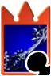
Características:
Two Become One is one of the more sword-like Keyblades, possessing a curved, notched blade that bears a slight resemblance to Soul Eater and Way to the Dawn, with a noticeably sharp edge. Its color scheme is derived from a fusion of Roxas's Oathkeeper and Oblivion Keychains, and the handle is composed of the same checkerboard pattern on Roxas's wristband. The Keyblade's design is also covered with references to Roxas's Nobody nature; the usual Nobody thorns make up the teeth and rainguard, which is black and rounded. The chain links are heavily stylized versions of the Nobody Emblem, and the full Nobody Emblem adorns the hilt. The token itself is Roxas's Nobody-thorn charm.
Ultima Weapon
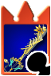
Características:
The Ultima Weapon is typically shown within the Final Fantasy series as a long sword, with a glowing blue/white blade and a golden handle. It is usually the strongest weapon for the main protagonist in the games it appears in. The Kingdom Hearts version of the Ultima Weapon is strongly reminiscent of the Dream Sword, but is wrapped in an ornate gold filigree in a pattern slightly reminiscent of fish bones. The teeth of the blade are a golden version of the crown charm Sora wears, and the Keychain token, attached to the blade by shimmering thread, is a gilded heart, used throughout the series to refer to a complete being, instead of a Heartless or Nobody. It also bears one heart just above the guard and another just next to the crown making up the teeth of the blade, both of which are present in the Kingdom Hearts II version. In the game, the blade's size is smaller compared to the hilt, compared to its design in the official artworks. This version is also used in Kingdom Hearts: Chain of Memories and Kingdom Hearts Re:coded. Small circular ripples and bolts of light are emitted whenever Sora strikes a target with it.
Wishing Star
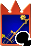
Características:
The Wishing Star's overall appearance is similar to the cogs and gears in a clock. The teeth of the Keyblade is one gear attached to the main blade by a piece of wood. There is another small gear on the main blade. The handguard is comprised of four gears of various colors, and pieces of wood attached to pulleys with string connecting the pulley to the gear. The Keychain's token is the star that Geppetto wished upon in Pinocchio.